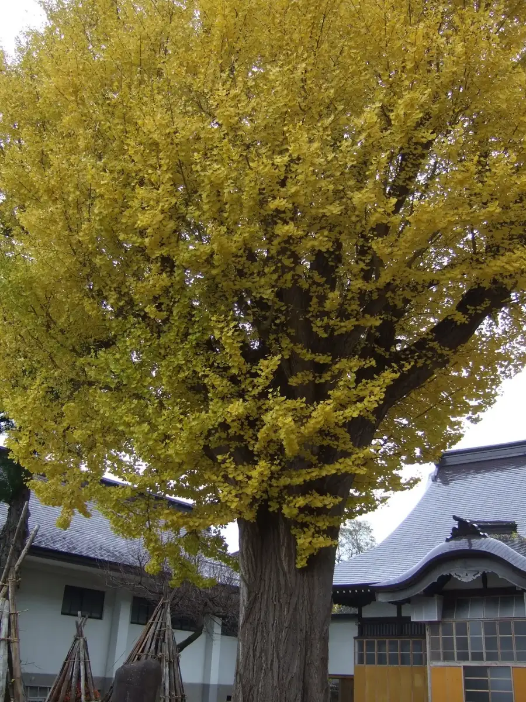
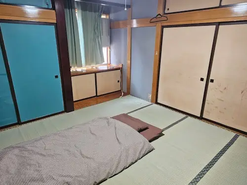
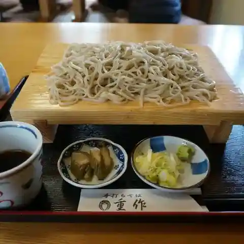
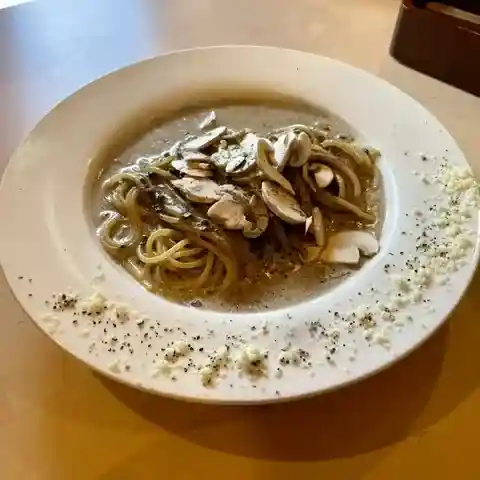
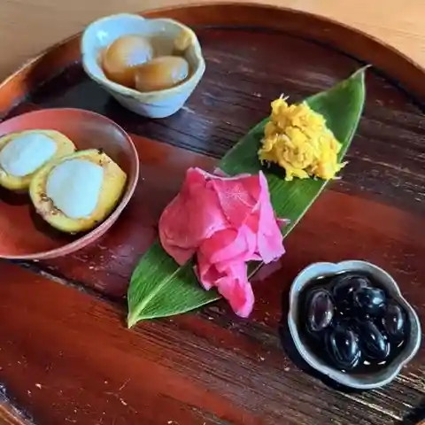
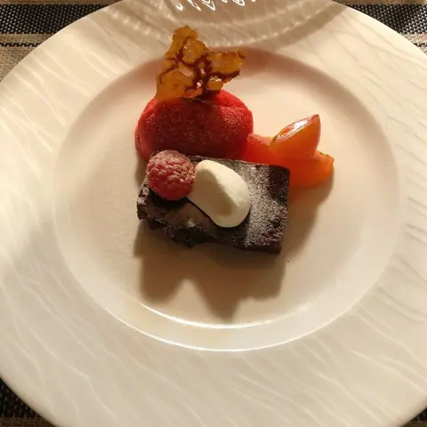
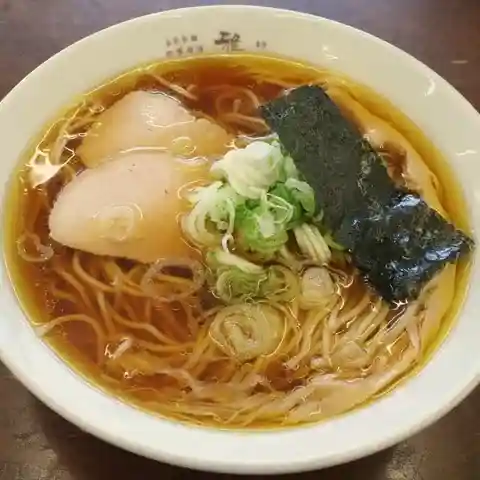
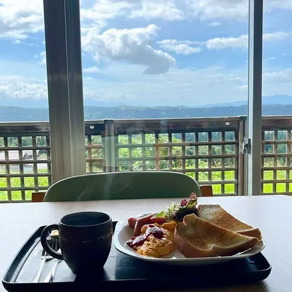
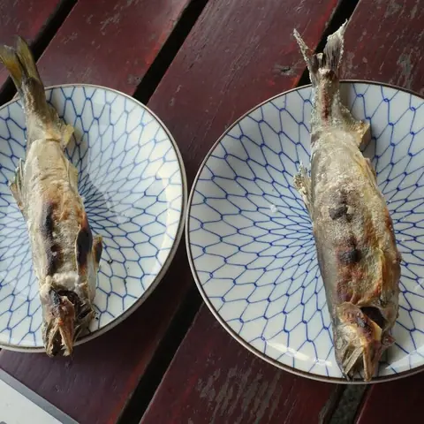
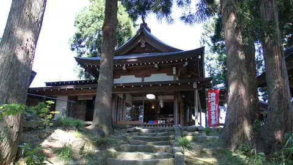

Funagata
Funagata · Yamagata
Funagata
Highlighted on the Yamagata map.

Stay
カムイキッズハウス／民泊

Kamui Kids House
Private lodging (minpaku) in Funagata, Yamagata.
Dining
重作

Juusaku
Soba restaurant in Funagata, Yamagata.
マッシュルームスタンド舟形

Masshuruumusutando Funagata
Café in Funagata, Yamagata.
さばね山そば

Sabane Yama Soba
Soba restaurant in Funagata, Yamagata.
ラ・テール

Ra Teeru
French restaurant in Funagata, Yamagata.
中華そば 雅

Chuuka Soba Masa
Ramen shop in Funagata, Yamagata.
舟形若あゆ温泉

Funagata Jaku Ayu Onsen
Shokudo diner in Funagata, Yamagata.
そば処大ノ家
Soba Tokoro Dai No Ie
Soba restaurant in Funagata, Yamagata.
鮎場 あたご

Ayu Ba Atago
Skewer grill in Funagata, Yamagata.
舟形町観光物産 センターめがみ えきcafe
Funagata Machi Kankou Bussan Sentaa Megami Eki Cafe
Soft-serve stand in Funagata, Yamagata.
小国川観光
Shoukoku Kawa Kankou
Seafood restaurant in Funagata, Yamagata.
肉のたかはし
Niku Notakahashi
Meat restaurant in Funagata, Yamagata.
き乃川
Ki No Kawa
Izakaya in Funagata, Yamagata.
寿し舟
Hisashi Shi Fune
Sushi restaurant in Funagata, Yamagata.
ぶっくかふぇ こほん こほん
Bukkukafe Kohon Kohon
Café in Funagata, Yamagata.
サバネヤ井上魚店
Sabaneya Inoue Sakana Mise
Seafood restaurant in Funagata, Yamagata.
まんさく
Mansaku
Shokudo diner in Funagata, Yamagata.
Sights
Sabaneyama Jizoson

Counted among Japan's three great Jizo, it has long been worshipped for children, matchmaking and long life; its festival is held on August 24. Next door, Sabaneyama Soba serves hand-made soba milled by the temple's deputy priest, and homemade sesame tofu.